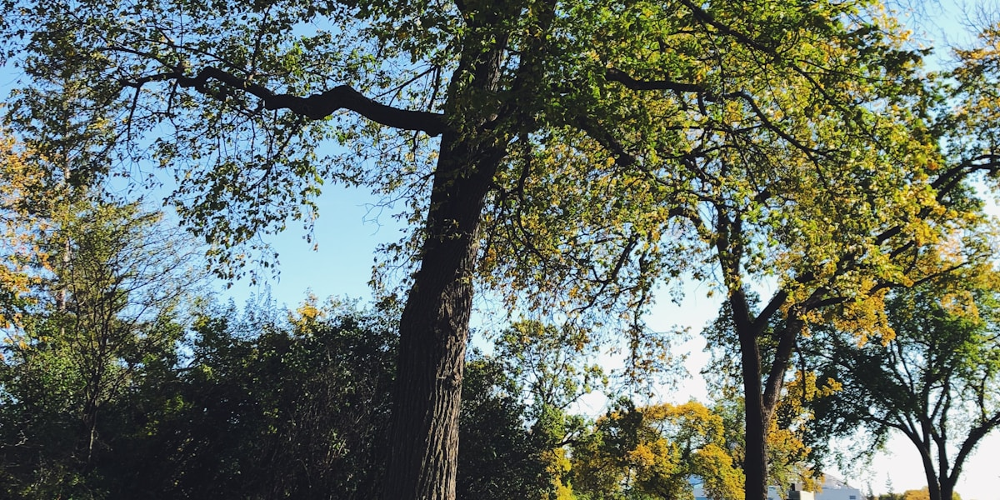

Pet-friendly spots near the Corydon Airbnb

If you're travelling with a dog, the Corydon/Crescentwood Airbnb sits in a genuinely walkable, tree-lined neighbourhood — good news for anyone who needs to get a leash on before breakfast. Here's what's actually nearby, and what Winnipeg's rules require.
Right from the door
Peanut Park (officially Enderton Park) is a small green space right in Crescentwood, an easy on-leash stroll from the Airbnb. Beyond that, the residential streets of Crescentwood are quiet and shaded — the same route covered in our Wellington Crescent walk makes a pleasant longer loop, ending at the Assiniboine River.
Winnipeg's leash rules
Under the City of Winnipeg's Responsible Pet Ownership By-law, dogs must be leashed anywhere off their owner's property, with the leash held by someone able to control the dog — off-leash is only permitted in designated off-leash dog areas, and even there a leash must be kept in hand and the dog under voice control. Dogs aren't allowed on playgrounds or sports fields, on-leash or off. Park hours are 7 a.m. to 11 p.m. unless posted otherwise.
Nearest official off-leash area
The city lists an off-leash area at King's Park, near Kilkenny Drive and Kings Drive on the south side of the Assiniboine River — a short drive from the Airbnb rather than a walk. It's the closest designated off-leash spot to Corydon; check the City of Winnipeg's parks page before you go, since designated areas and hours are occasionally adjusted.
Patios
Several restaurants along Corydon Avenue open their patios to well-behaved, leashed dogs in warmer months, but policy is set by each business and changes with staff, season, and city patio permits — always ask before you sit down rather than assuming.
Good to know: Bring your own water bowl and bags — not every block has waste stations. And if you're heading to King's Park, leave extra time; it's outside easy walking distance from Corydon.